好的，我将按照您的要求，忠实地保留原文格式和内容，并在每个段落、图片或逻辑单元后，添加带有连续编号标题的最长、最详细的中文解释。
Chapter1
解释 1
这部分是第一章的标题。本章将介绍有机化学中最基础、最核心的概念之一：化学键。理解化学键的本质、成键规则以及它如何决定分子的三维结构，是学习后续所有有机化学反应和性质的基石。
1 什么是键？
在第1页和第2页，我们简要回顾了化学键的物理基础。这段讨论不会出现在考试中，因为它不在麦克默里（McMurry）的教材中。它在这里的目的是引入这样一个原理：如果分子采用具有离域（分散）电子分布的几何构型，其能量会更低。麦克默里在课文的几个地方讨论了这一点，尤其是在具有π键的分子中。
解释 2
这部分是引言，为本章节的学习内容设定了基调和范围。
- 内容定位：明确指出这部分关于化学键物理基础的深入讨论，是为了帮助理解概念，而非考试重点。这通常意味着内容源于更高等的物理化学，但其核心思想对学习有机化学至关重要。
- 核心原理介绍：引入了贯穿整个有机化学的一个基本原理——电子离域化导致体系能量降低，从而使分子更稳定。
- 离域 (Delocalization)：这个词指的是电子不再局限于某两个特定的原子之间（即一个传统的双原子化学键），而是在多个（三个或更多）原子构成的更大空间范围内运动。想象一下，电子的活动范围从一条小巷子扩展到一个大广场，这就是离域。
- 能量更低：在量子力学中，粒子的能量与其活动空间的大小有关。通常情况下，活动空间越大，粒子的动能就越低。因此，当电子离域时，它们的能量会降低，这使得整个分子体系处于一个更稳定的状态。
- π键分子：文中特别提到了具有π键的分子，这是电子离域最典型的例子。例如，在共轭体系（如1,3-丁二烯）或芳香环（如苯）中，π电子不是固定在某两个碳原子之间，而是在整个共轭体系上自由流动，这种离域效应极大地增加了分子的稳定性。这个原理将在后续章节（如共振论）中反复出现。
1916年，G. N. Lewis提出，键是由两个原子共享的电子对形成，使得两个原子都遵守八隅体规则。键最初用两个点或一条线表示。如今，键用线表示，而路易斯点则用于表示孤对电子（非键合电子对）。
解释 3
这段话介绍了化学键的经典模型——路易斯理论 (Lewis Theory)。
- G. N. Lewis的贡献：吉尔伯特·牛顿·路易斯是现代化学键理论的奠基人之一。他在1916年提出的理论革命性地解释了非离子化合物（即共价化合物）是如何形成的。
- 共价键的核心思想：路易斯提出，共价键的本质是两个原子共享一对电子。这种共享使得每个原子都能达到一种稳定的电子构型。
- 八隅体规则 (Octet Rule)：这是路易斯理论的核心规则。它指出，主族元素（特别是第二周期元素如C, N, O, F）在形成化合物时，倾向于通过共享电子，使其最外层（价电子层）达到8个电子的稳定结构，这与惰性气体（如Ne, Ar）的电子排布相同。对于第一周期的氢（H），它遵守的是二隅体规则 (Duet Rule)，即达到2个价电子的稳定结构，与惰性气体氦（He）相同。
- 表示方法：
- 路易斯点结构 (Lewis Dot Structures)：这是路易斯最初用来表示价电子和化学键的方法。价电子用点“·”表示，共享的电子对放在两个原子符号之间。
- 现代表示法：为了简洁，共享的电子对（即化学键）现在通常用一根短线“—”表示。而未参与成键的价电子对，即孤对电子 (Lone Pair Electrons) 或非键合电子对，仍然用两个点“··”表示，它们只属于单个原子。
H₂和水的路易斯结构：

解释 4
这张图片展示了两个基本分子的路易斯结构，用来说明路易斯理论的应用。
- 氢气 (H₂) 分子：
- 左侧的
H· + ·H表示两个独立的氢原子，每个氢原子有1个价电子。 - 中间的
H:H是用路易斯点表示的氢分子。两个点位于两个H之间，表示这两个电子被两个氢原子所共享。通过共享，每个氢原子周围现在都有2个电子，满足了二隅体规则，达到了稳定结构。 - 右侧的
H-H是现代的线键表示法，一根短线代表一对共享电子，即一个共价单键。
- 左侧的
- 水 (H₂O) 分子：
- 左侧表示了构成水分子的原子：一个氧原子（有6个价电子，用6个点表示）和两个氢原子（每个有1个价电子）。
- 右侧是水分子完整的路易斯结构。氧原子位于中心，它与两个氢原子各共享一对电子，形成了两个O-H共价键。此外，氧原子上还有两对没有参与成键的价电子，这就是孤对电子。
- 验证八隅体规则：
- 对于中心的氧原子：它拥有2对孤对电子（共4个电子）+ 2个O-H键中的共享电子（共4个电子）。总计 个价电子，满足了八隅体规则。
- 对于每个氢原子：它参与形成1个O-H键，共享了一对电子（共2个电子）。每个氢都满足了二隅体规则。

共价键是一种量子现象——它没有经典类比。考虑H₂中的H-H键。当两个H原子相互靠近，它们的1s轨道重叠时，就形成了键。这意味着当原子核靠近（但不过于靠近）时，能量会更低，如右侧图所示。这种能量的降低就是键。H-H键并非连接H原子的独立物理实体，它仅仅是能量-距离曲线右侧的低能量区域。
解释 5
这段文字从量子力学的角度解释了化学键的本质，深化了对化学键的理解。
- 量子现象：共价键的形成无法用经典物理学（如牛顿力学）来完美解释，必须借助量子力学。这是因为电子的行为同时具有波和粒子的特性（波粒二象性），它们的运动由波函数描述，而不是经典的轨道。
- 原子轨道重叠 (Atomic Orbital Overlap)：根据价键理论，共价键的形成是两个原子价层原子轨道的重叠。在最简单的H₂分子中，每个氢原子有一个包含单个电子的1s球形轨道。当两个氢原子靠近时，它们的1s轨道发生空间上的重叠，电子可以在这个更大的重叠区域内运动。
- 能量与稳定性的关系：在物理和化学中，体系能量越低，状态越稳定。当两个氢原子从无限远处相互靠近时，体系的势能会发生变化。
- 化学键的本质：化学键不是一根连接原子的真实存在的“棍子”或“绳子”。它是一个能量概念。化学键的形成，本质上是原子组合成一个分子后，整个体系的能量低于它们作为独立原子时的能量总和。这个能量降低的值，就是键能 (Bond Energy)。如图所示，这个能量最低点对应的状态，就是稳定的H-H化学键。

解释 6
这张图是分子势能曲线，以H₂分子为例，展示了两个氢原子间的势能随核间距变化的规律。
- Y轴 (Energy)：表示两个氢原子构成的体系的总势能。能量零点通常定义为两个氢原子相距无限远、无相互作用时的状态。
- X轴 (Internuclear distance)：表示两个氢原子核之间的距离。
- 曲线解读：
- 右侧区域（距离远）：当两个氢原子相距很远时，它们之间几乎没有相互作用，体系势能接近于零。
- 曲线下降区域（相互靠近）：随着两个原子靠近，原子核开始吸引对方的电子，同时它们的1s原子轨道开始重叠。这种吸引作用占据主导，导致体系能量降低，变得更加稳定。
- 能量最低点（谷底）：在某个特定的核间距（对于H₂约为0.74 Å或74 pm），吸引和排斥达到了最佳平衡，体系的势能达到最小值。这个点对应的状态就是稳定的H₂分子。
- 键长 (Bond Length)：能量最低点所对应的核间距，即0.74 Å，被称为H-H键的键长。
- 键能 (Bond Energy)：从能量零点到能量最低点的能量差值（图中所示为436 kJ/mol），被称为键解离能，它表示断开1摩尔H-H键所需要的能量，是衡量化学键强度的标准。
- 左侧区域（距离过近）：如果两个原子继续靠近，使得核间距小于键长，那么两个带正电的原子核之间的静电排斥力以及电子间的排斥力将急剧增加并占据主导地位，导致体系能量迅速升高，变得非常不稳定。
但什么使能量更低呢？
解释 7
这是一个承上启下的设问，引出对化学键形成时能量降低背后更深层次的物理原因的探讨。前面的解释是“轨道重叠使能量降低”，而接下来的内容将回答“为什么轨道重叠会使能量降低”，这涉及到经典静电学和量子力学效应。
经典和量子效应共同作用，使键合区域的能量降低。库仑定律给出了带电粒子之间的经典静电力（同性相斥，异性相吸）。形成共价键需要两种量子效应。其一是海森堡不确定性原理，，其中是电子密度的空间范围（电子位置的不确定性），是电子动量的范围，是普朗克常数除以。电子运动的空间大小（，橙色区域）在H₂中比在H原子中更大。这意味着在H₂中比在H原子中更小。键的形成创造了一个平均电子动量更低的空间。这降低了电子动能（）。因此，分子倾向于采用电子密度离域（分散）的几何构型，因为形成低能量分子的概率高于形成异构高能量分子的概率。
解释 8
这段话从经典物理和量子力学两个层面，深入解释了化学键形成导致能量降低的原因。
- 经典效应：库仑定律 (Coulomb's Law)
- 公式：两个点电荷之间的静电力由库仑定律描述，其大小为 。其中 和 是电荷量， 是它们之间的距离。力的方向是同性相斥，异性相吸。
- 在成键中的作用：当两个原子靠近时，存在多种静电作用力：
- 吸引力：原子核A与电子B之间的吸引力；原子核B与电子A之间的吸引力。这些力使原子相互靠近，降低体系能量。
- 排斥力：原子核A与原子核B之间的排斥力；电子A与电子B之间的排斥力。这些力阻碍原子相互靠近，增加体系能量。
- 化学键的形成，是这些吸引力和排斥力达到平衡的结果。
- 量子效应1：海森堡不确定性原理 (Heisenberg Uncertainty Principle)
- 公式：
- ：粒子位置的不确定性。可以理解为粒子可能出现的空间范围的大小。
- ：粒子动量的不确定性。可以理解为粒子动量可能变化的范围。
- ：约化普朗克常数（读作h-bar），其值为 ，是一个极小的物理常数。
- 原理的含义：这个公式表明，我们不可能同时精确地知道一个粒子的位置和动量。位置测量得越精确（ 越小），动量的测量就越不精确（ 越大），反之亦然。
- 在成键中的应用：
- 在孤立的H原子中，电子被束缚在原子核周围一个相对较小的空间里，因此其位置的不确定性 较小。
- 在H₂分子中，两个1s轨道重叠，形成一个分子轨道。现在，每个电子可以在两个原子核周围的更大空间内运动。这种现象就是电子离域 (delocalization)。
- 由于电子的活动空间变大，其位置的不确定性 增大了。根据不确定性原理，为了满足不等式，其动量的不确定性 就可以相应地减小。
- 动量不确定性的减小，意味着电子的平均动量也随之降低。
- 动能与稳定性的关系：电子的动能由公式 给出，其中 是动量， 是电子质量。由于成键后电子的平均动量 降低了，其动能 也随之降低。
- 结论：电子离域（活动空间变大）通过不确定性原理，降低了电子的动能，这是化学键形成时体系能量降低的一个重要的量子力学原因。分子倾向于采取能让电子最大程度离域的构型，因为这样能最大程度地降低能量，从而达到最稳定的状态。
- 公式：

解释 9
这张图直观地展示了海森堡不确定性原理在H₂分子形成中的作用。
- 左图 (Two H atoms)：表示两个未成键的、孤立的氢原子。每个电子（图中未画出）的活动范围被限制在各自的原子核周围，这个空间由橙色的球形区域表示。这个区域的体积相对较小，代表了较小的位置不确定性 。
- 右图 (H₂ molecule)：表示两个氢原子形成共价键后的H₂分子。两个原子轨道重叠，电子现在可以在一个更大的、覆盖两个原子核的纺锤形区域（分子轨道）内运动。这个橙色区域的体积明显大于两个独立原子球体积之和。这代表了电子的位置不确定性 增大了。
- 核心思想：根据不确定性原理 ，右图中更大的 允许更小的 （动量不确定性）。动量的降低导致电子动能的降低，从而使整个分子体系的能量降低，变得更加稳定。这张图是“电子离域导致稳定”这一核心原理的绝佳视觉化解释。
另一个对键合很重要的量子效应是泡利不相容原理，它指出原子或分子中没有两个电子可以拥有相同的量子数集。例如，如果两个电子占据同一个空间轨道，它们必须具有相反的自旋。由于电子波函数的这一限制，电子可以占据所有成键分子轨道，而不仅仅是最低能量的轨道。因此，分子可以采用特定的形状，并且块状物质可以占据空间体积。
解释 10
这段话介绍了对理解物质结构至关重要的第二个量子效应——泡利不相容原理 (Pauli Exclusion Principle)。
- 原理的陈述：在一个原子或分子中，不可能有两个或两个以上的电子具有完全相同的一组量子数。
- 量子数 (Quantum Numbers)：为了完整描述一个电子的状态，需要四个量子数：
- 主量子数 ()：决定电子的能级和距离原子核的大致远近 (n = 1, 2, 3, ...)。
- 角量子数 ()：决定电子轨道的形状 (s, p, d, f)， 的取值为 0 到 。
- 磁量子数 ()：决定轨道在空间中的取向 (例如，p轨道有 三种取向)， 的取值为 到 。
- 自旋量子数 ()：描述电子的内禀角动量，即自旋。它只有两个可能的取值：（自旋向上，↑）和 （自旋向下，↓）。
- 对成键的意义：
- 一个轨道最多容纳两个电子：前三个量子数（）共同定义了一个空间轨道。在一个确定的轨道里，所有电子的这三个量子数都相同。根据泡利不相容原理，为了让它们的量子数集不完全相同，它们的第四个量子数——自旋量子数 ——必须不同。因为 只有两个值，所以一个轨道最多只能容纳两个自旋相反的电子。
- 化学键的形成：一个典型的共价键是由两个自旋相反的电子配对，共同占据一个成键分子轨道而形成的。
- 物质结构的基础：泡利不相容原理是化学元素周期性、原子壳层结构以及化学键多样性的根本原因。它迫使电子必须“分层”填充到能量逐渐升高的不同轨道中，而不是所有电子都挤在能量最低的1s轨道里。正是这个原理，使得原子有大小，分子有特定的几何形状，宏观物质能够占据空间，构成了我们所看到的多彩世界。
2 八隅体规则Octet Rule：一个分子只有在每个原子共享8个价电子时才是稳定的。
解释 11
这是对八隅体规则 (Octet Rule) 的一个简洁而核心的定义。
- 核心内容：主族元素（特别是第二周期的C, N, O, F等）在形成化学键时，倾向于通过得、失或共享电子，使其最外层的价电子数达到8个。
- “稳定”的含义：达到8个价电子的构型（类似于惰性气体氖Ne的电子构型 ）是一种低能量、高稳定性的状态。分子中的原子会自发地调整成键方式（形成单键、双键或三键）来尽可能满足这一规则。
- 应用：八隅体规则是一个非常强大且实用的工具，虽然它有例外，但在绝大多数有机分子中都适用。它帮助我们预测分子中原子的成键数目、孤对电子数目，并是绘制正确路易斯结构的首要指导原则。
给定分子式，可以使用八隅体规则推断分子的键连接方式。
解释 12
这句话强调了八隅体规则的实践价值。它不仅仅是一个理论描述，更是一个预测工具。当你知道一个分子的化学式（例如 ），你并不知道原子之间是如何连接的。八隅体规则就像一个拼图游戏的规则，指导你如何排列原子、分配电子（画键和孤对），从而得到一个化学上合理的、稳定的结构（即路易斯结构）。
在排列键和孤对电子以满足八隅体规则时，请遵循以下电子计数指南：
- 对于一个键，每个原子共享该电子对。两个电子都是每个原子八隅体的一部分。
- 孤对电子的两个电子都被分配给一个单一原子。
解释 13
这里给出了在检查一个原子是否满足八隅体规则时，如何计算其价电子数的具体方法。
- 共享电子（成键电子）的计算：一个化学键（一条线）代表一对（2个）电子。在计算时，这一对电子同时属于成键的两个原子。因此，对于一个原子来说，它参与形成的每个键都为它的八隅体贡献2个电子。
- 例：在甲烷 中，碳原子形成了4个C-H单键。在计算碳的价电子时，每个键都算2个电子，总数为 个电子。
- 孤对电子的计算：孤对电子（两个点）是不共享的，它们完全属于拥有它的那个原子。在计算时，一对孤对电子为该原子的八隅体贡献2个电子。
- 例：在氨气 中，氮原子有1对孤对电子和3个N-H单键。在计算氮的价电子时，孤对电子算2个，3个键算 个，总数为 个电子。
- 总计公式：
我们的目标是让这个总数等于8。

解释 14
这张图通过氨（Ammonia, ）和水（Water, ）两个例子，非常清晰地演示了如何应用电子计数指南来验证八隅体规则。
- 左侧：氨 (NH₃)
- 氮 (N) 的计数：图中用蓝色圆圈圈出了氮原子及其周围的价电子。
- 孤对电子：氮原子顶部有一对孤对电子（2个电子），它们完全属于氮。
- 共享电子：氮原子与三个氢原子形成了三个N-H单键。每个键中的一对电子（2个电子）都算作氮的价电子。所以共享电子贡献为 个电子。
- 总数：氮的价电子总数为 。因此，氮原子满足八隅体规则。
- 氢 (H) 的计数：每个氢原子只参与一个N-H键，共享一对电子，所以每个氢都有2个价电子，满足二隅体规则。
- 右侧：水 (H₂O)
- 氧 (O) 的计数：图中用蓝色圆圈圈出了氧原子及其周围的价电子。
- 孤对电子：氧原子有两对孤对电子（共4个电子），它们完全属于氧。
- 共享电子：氧原子与两个氢原子形成了两个O-H单键。每个键都为氧贡献2个电子。所以共享电子贡献为 个电子。
- 总数：氧的价电子总数为 。因此，氧原子满足八隅体规则。
- 氢 (H) 的计数：每个氢原子参与一个O-H键，共享一对电子，满足二隅体规则。
原子轨道
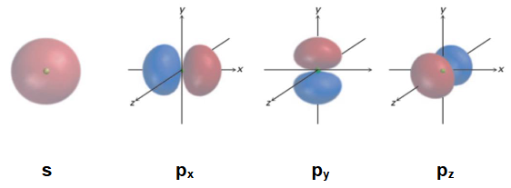
解释 15
这张图展示了最基本的三种原子轨道 (Atomic Orbitals, AOs) 的形状和空间取向，这是理解化学键（特别是杂化理论）的基础。
- s 轨道：
- 形状：球形对称。这意味着在任何方向上找到电子的概率都是相同的。
- 图示：左侧的球体代表一个s轨道，例如氢原子的1s轨道或碳原子的2s轨道。
- p 轨道：
- 形状：哑铃形，由两个“瓣 (lobes)”组成，原子核位于两个瓣的交接点（称为节面），在该点找到电子的概率为零。
- 取向：在任何一个能级（n≥2）中，都存在三个能量相同但空间取向相互垂直的p轨道。它们通常沿着笛卡尔坐标系的x、y、z轴分布，因此被称为 轨道。
- 图示：右侧的三个图分别展示了 （哑铃沿x轴分布）、（哑铃沿y轴分布）和 （哑铃沿z轴分布）轨道。
- 重要性：原子的价电子就分布在这些s和p轨道中。当原子形成分子时，这些原子轨道会通过重叠或“混合”（杂化）来形成化学键。轨道的形状和方向直接决定了分子最终的几何构型。
C、N原子基态
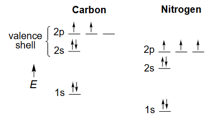
解释 16
这张图展示了碳（C）和氮（N）原子在基态 (ground state)，即最低能量状态下的电子排布 (electron configuration)。
- 轨道能量图：Y轴代表轨道的能量高低。可以看出，2s轨道的能量低于2p轨道。
- 碳原子 (C)：
- 原子序数：6，意味着有6个电子。
- 电子排布式：。图中只显示了价电子层（n=2）。
- 轨道填充：2s轨道被一对自旋相反的电子填满。根据洪特规则 (Hund's Rule)，当电子填充到能量相同的轨道（简并轨道，如三个2p轨道）时，它们会尽可能分占不同的轨道，并且自旋方向相同。因此，碳的两个2p电子分别占据了两个不同的p轨道（例如 和 ），且自旋平行。
- 价电子：共有4个价电子（2s²2p²）。基态碳似乎只能形成两个共价键（因为只有两个未配对电子），这与它在甲烷()中形成四个键的事实相矛盾。这个矛盾引出了下一节的杂化理论。
- 氮原子 (N)：
- 原子序数：7，意味着有7个电子。
- 电子排布式：。
- 轨道填充：2s轨道被一对电子填满。三个2p电子分别占据了 三个轨道，且自旋方向相同。
- 价电子：共有5个价电子（2s²2p³）。基态氮有三个未配对电子，这与它通常形成三个共价键（如在 中）的观察相符。
3 3-D 分子几何结构和杂化
杂化解决了以下问题： 如果我们知道分子的几何构型，如何理解其键合bonding？ 键合需要相邻原子轨道（AOs）的重叠。 杂化产生单向原子轨道，以实现更有效的键合。
解释 17
这段文字引入了杂化轨道理论 (Hybrid Orbital Theory)，并解释了为什么要提出这个理论。
- 要解决的问题：实验测得，甲烷()分子是正四面体结构，四个C-H键完全等价，键角均为109.5°。但是，基态碳原子的价层轨道是一个球形的2s轨道和三个相互垂直的2p轨道（键角应为90°）。用这些原始的原子轨道无法解释甲烷的键角和键的等价性。杂化理论就是为了解决这个理论与实验事实之间的矛盾而提出的。
- 理论出发点：化学键是由原子轨道重叠形成的。重叠越有效（即重叠区域越大），形成的化学键就越强，分子就越稳定。
- 杂化的核心思想：
- 它是一个数学模型。它假设中心原子的价层原子轨道（如碳的2s和2p轨道）在成键之前，可以进行数学上的“混合”或“重组”，形成一组全新的、能量和形状都相同的杂化轨道 (Hybrid Orbitals)。
- 目的：生成的杂化轨道具有很强的方向性，它们在空间中会尽可能地相互远离，以减小电子间的排斥力。这种方向性使得它们能够与其它原子的轨道进行更有效的“头对头”重叠，从而形成更强的σ键，最终使整个分子达到更稳定的、符合实验观测的几何构型。
| 线性（乙炔） acetylene |
平面（乙烯） ethylene |
非平面（甲烷） methane |
|
|---|---|---|---|
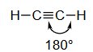 |
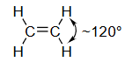 |
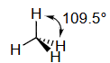 |
|
| 杂化: Hybridization |
sp | ||
| s特征: s-character |
50% | 33% | 25% |
解释 18
这个表格总结了有机化学中最常见的三种碳原子杂化类型，并将它们与具体的分子实例、几何构型和s-轨道成分联系起来。
- 第一列：甲烷 (Methane, )
- 构型：非平面，正四面体结构，键角为109.5°。
- 杂化类型: 杂化。这是由一个s轨道和三个p轨道混合形成的四个等价的 杂化轨道。这四个轨道指向正四面体的四个顶点。
- s-特征 (s-character)：在每个 杂化轨道中，s轨道的成分占 ，即 25%。
- 第二列：乙烯 (Ethylene, )
- 构型：平面结构，所有六个原子都在同一个平面上，H-C-H 和 H-C-C 的键角约为120°。
- 杂化类型: 杂化。这是由一个s轨道和两个p轨道混合形成的三个等价的 杂化轨道。这三个轨道在同一个平面上，互成120°角。剩下的一个p轨道未参与杂化。
- s-特征：在每个 杂化轨道中，s轨道的成分占 ，即约 33%。
- 第三列：乙炔 (Acetylene, )
- 构型：线性结构，所有四个原子都在一条直线上，H-C-C键角为180°。
- 杂化类型: 杂化。这是由一个s轨道和一个p轨道混合形成的两个等价的 杂化轨道。这两个轨道在同一直线上，指向相反方向，夹角为180°。剩下的两个p轨道未参与杂化。
- s-特征：在每个 杂化轨道中，s轨道的成分占 ，即 50%。
- s-特征的重要性：s-特征的百分比越高，意味着杂化轨道中的电子离原子核越近（因为s轨道比p轨道更靠近原子核）。这会导致：
- 键更短、更强：例如，sp杂化碳形成的C-H键比sp³杂化碳形成的C-H键更短、更强。
- 电负性更大：sp杂化碳的电负性大于sp²碳，sp²碳又大于sp³碳。
为了在x轴上形成具有180°键角的乙炔，每个碳原子需要一个p_x原子轨道与一个s原子轨道混合（sp杂化），如下图所示。s和p_x原子轨道混合，形成一对沿x轴指向相反方向（180°键角）的sp杂化原子轨道。
解释 19
这段话详细解释了形成 sp 杂化 的过程，并以乙炔分子为例。
- 目标构型：实验测定乙炔 () 是线性分子，键角为180°。
- 所需轨道：为了形成指向相反方向的两个键，我们需要两个方向性相反的轨道。
- 杂化过程：
- 我们从中心碳原子的价层轨道中选取一个2s轨道和一个2p轨道（为了方便描述，假设是沿着成键方向的 轨道）。
- 通过数学上的线性组合（混合），这两个原子轨道重新组合成两个新的、完全等价的 sp 杂化轨道。
- 结果：这两个sp杂化轨道具有相同的形状和能量。它们的形状像一个不对称的哑铃，一头大一头小，这使得大头一侧能更有效地与其它轨道重叠。最重要的是，这两个轨道分布在同一直线上，互成180°角，正好可以用来解释乙炔的线性几何构型。
- 未参与杂化的轨道：原来的 和 轨道没有参与杂化，它们保持原样，并垂直于sp杂化轨道所在的直线。它们将用于形成π键。
3.1 sp
在每个碳原子上，s和p原子轨道混合形成一对sp杂化原子轨道：

解释 20
这张图直观地展示了 sp 杂化 的过程。
- 左侧 (An s orbital and a p orbital)：显示了参与杂化的原材料——一个球形的s轨道和一个哑铃形的p轨道。
- 右侧 (Two sp hybrid orbitals)：显示了杂化后的产物——两个sp杂化轨道。
- 关键特征：
- 混合：s轨道和p轨道通过线性组合进行“混合”。
- 守恒：投入了两个原子轨道（一个s，一个p），最终也得到了两个杂化轨道。轨道总数在杂化前后保持不变。
- 形状和方向：生成的两个sp杂化轨道形状相同，都是一头大一头小。它们以原子核为中心，沿同一直线指向相反方向，夹角为180°。图中明确标出了这个180°的角度，这正是形成线性分子结构的关键。
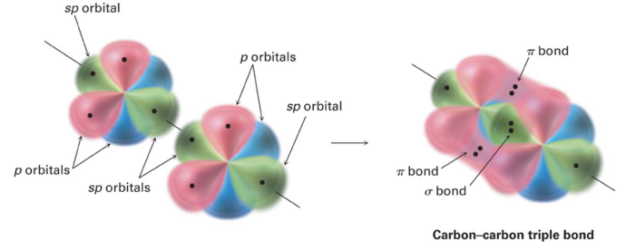
解释 21
这张图展示了sp杂化后的碳原子，包括杂化轨道和未杂化的p轨道。
- sp hybrid orbitals (绿色)：图中绿色的两个大瓣，分别沿x轴正负方向伸展，代表了两个sp杂化轨道。它们将用于形成σ键（例如，在乙炔中，一个与另一个碳的sp轨道重叠形成C-C σ键，另一个与氢的1s轨道重叠形成C-H σ键）。
- p_y and p_z orbitals (蓝色)：图中蓝色的两个哑铃形轨道，分别沿y轴和z轴分布，代表了两个未参与杂化的p轨道。它们相互垂直，并且也垂直于sp杂化轨道所在的x轴。这两个p轨道将用于形成两个π键。

解释 22
这张图展示了乙炔 () 分子中所有化学键的形成方式。
- σ 键 (Sigma bonds)：也称为σ骨架，是分子结构的基础。它们由轨道的“头对头 (head-on)”重叠形成，电子云密度主要集中在两核之间。
- C-C σ 键：由两个碳原子的sp杂化轨道直接重叠形成。
- C-H σ 键：由每个碳原子的另一个sp杂化轨道与氢原子的1s轨道重叠形成。
- 所有的σ键共同构成了一个线性的分子骨架。
- π 键 (Pi bonds)：由未杂化的p轨道“肩并肩 (side-by-side)”重叠形成。电子云密度分布在σ键轴的上方和下方。
- 图中，两个碳原子上相互平行的 轨道发生侧向重叠，形成一个π键。
- 同时，两个碳原子上相互平行的 轨道也发生侧向重叠，形成第二个π键。
- 碳碳三键：乙炔中的碳碳三键，就是由一个σ键和两个相互垂直的π键构成的。这是sp杂化最典型的应用。
3.2
碳的s、p_x和p_y原子轨道结合形成3个在x-y平面上的sp²原子轨道。

解释 23
这段文字和图片解释了 杂化 的过程。
- 目标构型： 杂化用于解释平面三角形的分子构型，例如乙烯()或三氟化硼()，其理想键角为120°。
- 杂化过程：
- 原材料：从中心碳原子的价层轨道中选取一个2s轨道和两个2p轨道（例如 和 ）。
- 混合：这三个原子轨道进行数学上的线性组合。
- 产物：生成三个新的、完全等价的 杂化轨道。轨道总数依然守恒（1+2=3）。
- 杂化轨道的特点：
- 共面性：这三个 杂化轨道位于同一个平面上（图中所示的x-y平面）。
- 夹角：它们以原子核为中心，相互之间的夹角为 120°，指向一个等边三角形的三个顶点。这可以最大程度地减小它们之间的排斥力。
- 未杂化的轨道：还有一个p轨道（在这里是 轨道）没有参与杂化。它保持原样，其方向垂直于 杂化轨道所在的平面。这个p轨道将用于形成π键。
 侧视图
侧视图
 俯视图
俯视图
解释 24
这两张图从不同视角展示了一个 杂化的碳原子 的轨道结构。
- 侧视图 (Side view)：
- 轨道 (绿色)：我们可以清楚地看到位于水平面（x-y平面）内的三个 杂化轨道。
- p 轨道 (蓝色)：垂直于这个平面的、未杂化的 轨道清晰可见。它的两个瓣分别位于平面的上方和下方。
- 俯视图 (Top view)：
- 轨道 (绿色)：从正上方（沿着z轴）看下去，我们可以完美地看到三个 杂化轨道在一个平面上互成120°角，像一个三叶风扇。
- p 轨道 (蓝色)：未杂化的 轨道此时看起来像一个位于中心的圆圈，因为它垂直于观察平面。
- 总结：这两张图结合起来，完整地构建了 杂化碳原子的三维图像：一个由三个 轨道构成的平面“骨架”，以及一个垂直于该骨架的p轨道。这个结构是形成碳碳双键和平面分子（如乙烯）的基础。
轨道垂直于sp 骨架

解释 25
这张图展示了乙烯 () 分子中化学键的形成，是 杂化的典型应用。
- 左图 (σ-framework)：展示了分子的 σ键骨架。
- C-C σ 键：由两个 杂化碳原子的一个 轨道“头对头”重叠形成。
- C-H σ 键：每个碳原子剩下的两个 轨道分别与两个氢原子的1s轨道重叠，形成四个C-H σ键。
- 结果：所有的σ键都在同一个平面上，构成了乙烯分子的平面骨架。每个碳原子周围的键角（H-C-H 和 H-C-C）都接近120°。
- 右图 (π-bond)：展示了 π键 的形成。
- p轨道重叠：两个碳原子上未参与杂化的、相互平行的 轨道，以“肩并肩”的方式发生侧向重叠。
- 电子云分布：这种重叠导致电子云密度分布在σ键平面的上方和下方。图中蓝色的两个区域共同构成一个π键。
- 旋转受限：π键的存在使得碳碳双键不能自由旋转。如果旋转，p轨道的侧向重叠就会被破坏，π键就会断裂，这需要相当大的能量。这是产生顺反异构现象的原因。
- 总结：乙烯中的碳碳双键，是由一个σ键和一个π键构成的。
3.3
碳的s、p_x、p_y、p_z原子轨道结合形成四个具有四面体对称性的sp³杂化原子轨道。
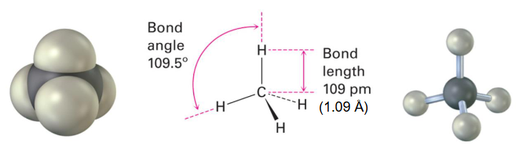
解释 26
这段文字和图片解释了 杂化 的过程。
- 目标构型： 杂化用于解释正四面体的分子构型，例如甲烷()，其理想键角为109.5°。
- 杂化过程：
- 原材料：从中心碳原子的价层轨道中选取全部的价轨道，即一个2s轨道和全部三个2p轨道 ()。
- 混合：这四个原子轨道进行数学上的线性组合。
- 产物：生成四个新的、完全等价的 杂化轨道。轨道总数依然守恒（1+3=4）。
- 杂化轨道的特点：
- 空间取向：这四个 杂化轨道为了在三维空间中尽可能相互远离，以最小化电子排斥，它们会自然地指向一个正四面体 (tetrahedron) 的四个顶点。
- 夹角：任意两个 杂化轨道之间的夹角都是 109.5°。
- 成键：由于所有的p轨道都参与了杂化，所以 杂化的原子通常只形成σ单键，没有未杂化的p轨道来形成π键。


解释 27
这组图片展示了甲烷 () 分子的成键过程，是 杂化的经典应用。
- 左图：显示了一个 杂化的碳原子。四个等价的 杂化轨道分别指向正四面体的四个顶点。
- 中间图：展示了甲烷分子中σ键的形成。
- 中心的 杂化碳原子，其四个 杂化轨道分别与四个氢原子的球形1s轨道发生“头对头”重叠。
- 这种重叠形成了四个完全等价的C-H σ键。
- 由于杂化轨道的空间排布是正四面体，所以最终形成的甲烷分子也是正四面体构型，任意两个H-C-H键之间的夹角都是109.5°。
- 右图：是甲烷分子的球棍模型，更直观地展示了其三维的正四面体形状。
- 结论：杂化轨道理论完美地解释了实验观测到的甲烷分子的几何结构和化学键的等价性，解决了之前基态碳原子轨道模型无法解释的矛盾。
4 根据键连接bond connectivity方式预测杂化hybridization
解释 28
这个标题标志着学习重点的转变：从理解杂化理论的**“为什么”（即理论基础），转向学习“如何”**在实践中快速、准确地判断一个给定分子中原子的杂化方式。这是一种非常实用的技能。
4.1 计算与一个原子相连的原子数量 + 孤对电子数量
sp³ 原子数量 + 孤对电子数量 = 4 sp² 原子数量 + 孤对电子数量 = 3 sp 原子数量 + 孤对电子数量 = 2
解释 29
这里给出了一种非常简单实用的方法来预测中心原子的杂化类型，通常被称为价层电子对互斥理论 (VSEPR) 的简化应用或立体数法 (Steric Number Method)。
- 核心思想：原子的杂化方式取决于其周围的电子区域 (electron domains) 的总数。一个电子区域可以是一个单键、一个双键、一个三键或一对孤对电子。简而言之，我们只关心一个原子周围有多少个“方向”需要伸出轨道。
- 计算方法（立体数）：
- 注意：无论连接的是单键、双键还是三键，都只算作一个相连的“原子”或“方向”。例如，在 中，碳与两个氧原子相连，它的立体数是2，不是4。
- 判断规则：
- 如果立体数 = 4，则原子采用 杂化。例如，甲烷 () 中，碳连接了4个原子，孤对为0，立体数为4 → 。氨气 () 中，氮连接了3个原子，孤对为1，立体数为 → 。
- 如果立体数 = 3，则原子采用 杂化。例如，乙烯 () 中，每个碳连接了2个H和1个C，孤对为0，立体数为3 → 。
- 如果立体数 = 2，则原子采用 杂化。例如，乙炔 () 中，每个碳连接了1个H和1个C，孤对为0，立体数为2 → 。
4.2 每个杂化原子都与一个键角相关联，这是一个可测量量。杂化仅对连接到个其他原子的原子明确定义，这定义了一个键角。
解释 30
这段话对杂化概念的应用范围和意义进行了重要的补充说明。
- 杂化与键角的关系：杂化不仅仅是一个抽象的数学模型，它有可供实验验证的物理结果，其中最重要的就是键角。
- 杂化对应理想键角 109.5°
- 杂化对应理想键角 120°
- 杂化对应理想键角 180°
- 通过实验测量分子的键角，可以反过来验证我们对原子杂化方式的判断。
- 杂化的适用对象：讨论一个原子的杂化方式，只有当这个原子是中心原子时才有意义。
- 所谓中心原子，是指它至少连接了两个其他的原子。因为只有这样，这三个原子（例如 A-B-C 中的B）才能构成一个键角 (∠ABC)。
- 对于端基原子（只与一个原子相连的原子，如 中的H或 中的Cl），讨论其杂化方式是没有意义的，因为它们没有形成键角。例如，你无法定义H-C-?的键角。因此，杂化理论通常只用于描述分子的内部原子。
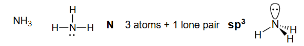
N 3个原子 +1个孤对电子
解释 31
这张图和文字以氨分子 () 为例，应用了4.1节的判断规则。
- 路易斯结构：首先画出氨的路易斯结构。中心原子是氮(N)，它与三个氢(H)原子形成单键，并且氮上还有一对孤对电子。
- 计算立体数：
- 与N相连的原子数 = 3 (三个H)
- N上的孤对电子数 = 1
- 立体数 =
- 判断杂化：立体数为4，因此氮原子采用 杂化。
- 预测几何构型：
- 电子几何：四个电子区域（3个键+1个孤对）会排布成四面体形状，以使排斥最小。
- 分子几何：我们只能“看到”原子的位置，而“看不到”孤对电子。所以，分子的形状是由N和三个H决定的，呈现三角锥形 (trigonal pyramidal)。
- 键角：由于孤对电子对成键电子的排斥力比成键电子之间的排斥力更强，它会把三个N-H键向下“挤压”，使得H-N-H键角略小于理想的109.5°，实际测得约为107°。
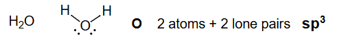
O 2个原子 + 2个孤对电子
解释 32
这张图和文字以水分子 () 为例，继续应用判断规则。
- 路易斯结构：画出水的路易斯结构。中心原子是氧(O)，它与两个氢(H)原子形成单键，氧上还有两对孤对电子。
- 计算立体数：
- 与O相连的原子数 = 2 (两个H)
- O上的孤对电子数 = 2
- 立体数 =
- 判断杂化：立体数为4，因此氧原子采用 杂化。
- 预测几何构型：
- 电子几何：四个电子区域（2个键+2个孤对）同样排布成四面体形状。
- 分子几何：我们只能看到O和两个H的位置，这三个原子构成一个角形或V形 (bent/V-shaped) 结构。
- 键角：由于氧上有两对孤对电子，其排斥效应比氨中的一对孤对电子更强，所以H-O-H键角被进一步压缩，比109.5°小得多，实际测得约为104.5°。
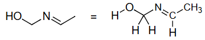
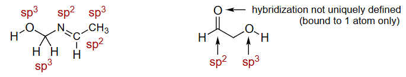
杂化轨道不是唯一定义的（仅限于一个原子）
解释 33
这组图片和文字强调了4.2节中提到的一个要点：杂化是针对中心原子而言的。
- 上图：展示了甲醇 () 分子。我们可以讨论中心碳原子的杂化（连接4个原子，无孤对，立体数4 → ），也可以讨论中心氧原子的杂化（连接2个原子，有2对孤对，立体数4 → ）。
- 下图：用红色箭头指向了甲醇分子中的一个氢原子，并提问“What hybridization?” (什么杂化？)。
- 结论：这个问题是没有意义的。这个氢原子是一个端基原子，它只与氧原子形成了一个键，没有形成任何键角。因此，我们不对它定义杂化方式。杂化是用来解释中心原子如何组织其轨道来形成多个键并决定键角的模型，这个模型对端基原子不适用。
4.3 具有C、N、O八隅体的常见结构：

解释 34
这张图表总结了在有机分子中，为了满足八隅体规则，碳(C)、氮(N)、氧(O) 这三种最常见元素典型的成键模式。熟悉这些模式可以极大地提高绘制和理解分子结构的速度。
- 碳 (Carbon)：价电子为4，通常需要形成4个共价键，且没有孤对电子。
- 4个单键：如甲烷 ()，碳是 杂化，四面体构型。
- 1个双键 + 2个单键：如乙烯 ()，碳是 杂化，平面构型。
- 1个三键 + 1个单键：如乙炔 ()，碳是 杂化，线性构型。
- 2个双键：如二氧化碳 ()，碳是 杂化，线性构型。
- 氮 (Nitrogen)：价电子为5，通常需要形成3个共价键和拥有1对孤对电子。
- 3个单键：如氨 ()，氮是 杂化，三角锥构型。
- 1个双键 + 1个单键：如甲醛肟 ()，氮是 杂化，平面构型。
- 1个三键：如氰化氢 ()，氮是 杂化，线性构型。
- 氧 (Oxygen)：价电子为6，通常需要形成2个共价键和拥有2对孤对电子。
- 2个单键：如水 ()，氧是 杂化，角形构型。
- 1个双键：如甲醛 ()，氧是 杂化，平面构型。
- 卤素 (Halogens, X=F, Cl, Br, I)：价电子为7，通常形成1个共价键和拥有3对孤对电子。由于是端基原子，通常不讨论其杂化。
4.4 绘制结构：
如何表示键连接性

解释 35
这张图展示了表示同一个有机分子（异戊烷，Isopentane）的三种不同方法，从最详细到最简化。
- 分子式 (Molecular Formula)：。这是最基本的信息，只告诉我们分子中各种原子的数量，但完全没有提供原子是如何连接的（即结构信息）。 可以代表多种不同的同分异构体。
- 结构式 (Structural Formula / Lewis Structure)：图中中间的结构。它明确地画出了分子中所有的原子（用元素符号表示）和所有的化学键（用线表示）。这种表示法信息最完整，但对于大分子来说，绘制起来非常繁琐。
- 键线式 (Bond-line Structure / Skeletal Structure)：图中右侧的锯齿形结构。这是有机化学家最常用、最高效的表示方法。它遵循一套简化约定，省略了大部分碳和氢原子，只画出碳骨架和杂原子。学习有机化学必须熟练掌握键线式的解读和绘制。下一节将详细介绍其规则。
4.5 绘图约定：
- 绘制C-C键，省略C和H标签，除非H连接到杂原子（非碳原子）时才包括H。
- C原子位于拐角处（2个或更多C-C键的交点）和链的末端。
- 连接到C的H原子数量由八隅体规则推断。
解释 36
这里详细说明了绘制和解读键线式 (Skeletal Structure) 的三大核心规则。
- 碳氢的省略：
- 碳链骨架：只画出连接碳原子的键，形成一个“骨架”。
- 省略C符号：骨架上的每个端点和每个**拐角（顶点）**都默认代表一个碳原子。
- 省略H符号：连接在碳原子上的氢原子不画出来。
- 例外：如果氢原子连接在杂原子（非碳原子，如O, N, S等）上，则必须画出该氢原子（例如，-OH基团中的H必须画出）。
- 碳原子的位置：
- 拐角/顶点 (Vertex)：两条或多条线的交点代表一个碳原子。
- 端点 (End of a line)：一条线的末端，如果没有连接其他原子符号，也代表一个碳原子。
- 氢原子数量的推断：
- 核心原则：中性的碳原子总是形成四个键来满足八隅体规则。
- 推断方法：对于键线式中的任何一个碳原子，首先数出图上已经画出的与它相连的键（即C-C键或与杂原子的键）。然后，用4减去这个数，差值就是该碳原子上未画出的氢原子的数量。
- 示例：如果一个拐角处连接了2条线，那么这个碳原子已经形成了2个键，所以它还连接了 个氢原子（即是一个 基团）。如果一个端点只连接了1条线，那么它还连接了 个氢原子（即是一个 基团）。
上面的分子：


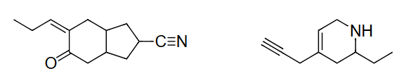
解释 37
这部分提供了两个练习，要求学生应用键线式规则。
- 第一个分子（左侧）：这是一个含有六元环和双键的分子（环己烯）。
- 环上有6个顶点，代表6个碳原子。
- 其中一个键是双键。
- 第二个分子（右侧）：这是一个含有酮羰基（C=O）和支链的分子。
- 它有一个链状骨架，包含5个碳原子。
- 其中一个碳原子通过双键与一个氧原子相连（羰基）。氧原子是杂原子，所以它的符号'O'必须写出来。
修订上面2个结构，包含每个碳原子上的所有C-H键。


解释 38
这两张图是上一个练习的答案，展示了如何将键线式“翻译”回完整的结构式，即把所有省略的碳和氢都画出来。
- 左侧：环己烯的完整结构
- 双键碳：我们来看双键两端的两个碳。每个碳都参与了1个双键和2个单键（总共3个键）。因此，为了满足4个键的规则，每个碳上还必须连接 1个氢。
- 单键碳：环上剩下的四个碳原子，每个都只参与了2个碳-碳单键。因此，为了满足4个键的规则，每个碳上都必须连接 2个氢。
- 图中正确地画出了所有这些C-H键。
- 右侧：酮的完整结构
- 左侧端点碳：这是一个链的末端，只画了1个C-C单键。所以它需要 个氢，是一个 基团。
- 羰基碳 (C=O)：这个碳已经画出了1个C=O双键和2个C-C单键，总共4个键。所以它上面没有氢。
- 中间的支链点碳：这个碳画了3个C-C单键。所以它需要 个氢，是一个 CH 基团。
- 上方的支链端点碳：这是一个端点，只画了1个C-C单键。所以它需要 个氢，是一个 基团。
- 右侧的端点碳：这也是一个端点，只画了1个C-C单键。所以它需要 个氢，是一个 基团。
- 图中正确地将这个键线式展开，显示了所有推断出的C-H键。这个过程是解读键线式结构的关键技能。